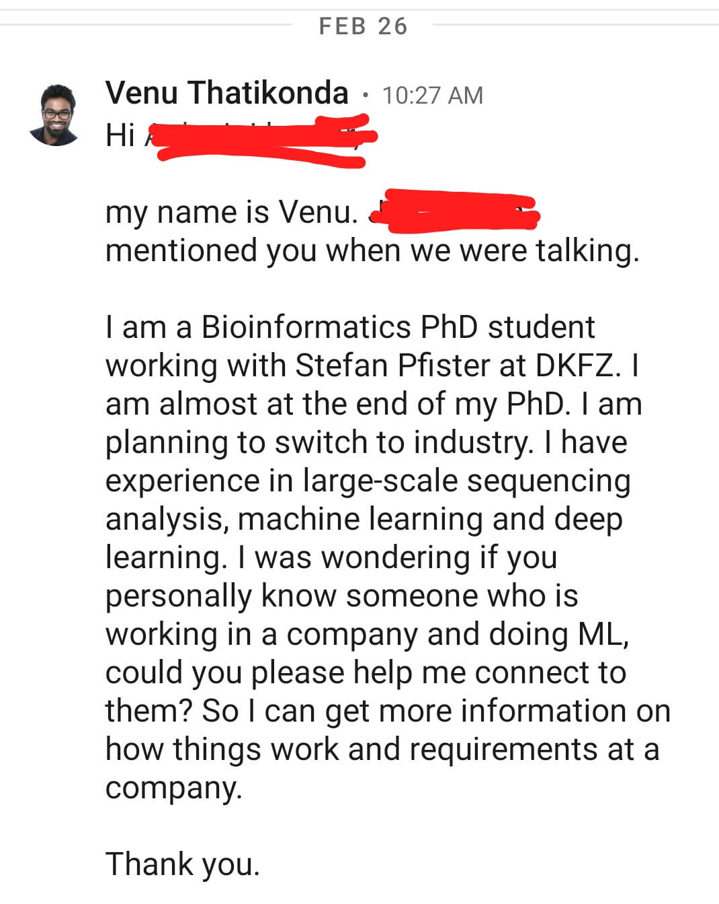
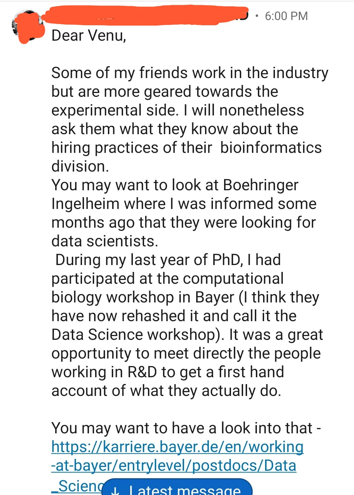
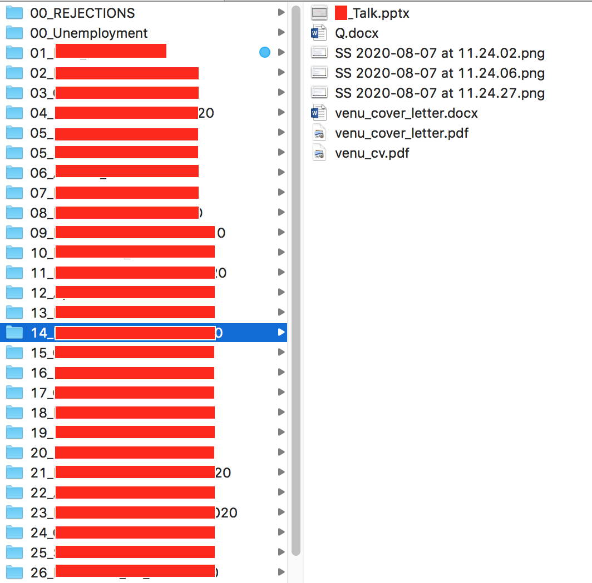

Link to Part-2: JobHunting - Part 2 - Interviews
2020 huh!
Despite the unfortunate things going on in the world, most of us had to continue with our careers, work and education. Amongst the few, I have been fortunate enough to defended my PhD in July, 2020.
I was aiming to move to industry for my next position. I started applying for potential positions of interest way before I completed my thesis. But because of the pandemic, the response rates, interview processes were extremely slow. I have been through almost 20+ interviews (this is not 20+ companies but interviews). Some said NO to me and I said NO to some offers at the end.
I documented my experience of job applications and interviews. Though all this happened in 2020, some of the things we adapted this year might be applicable to following years and my experience might help you in your job hunting process.
Please keep the following points in mind if something I did is too specific
- I was sure to move to industry, so I did not apply for any academic positions
- I was looking for industry positions where I can do cancer research and publish papers
- I am a Bioinformatician/Computational Biologist
- Some points might be personal opinions based on my experience [take it with a grain of salt]
1. Talk to your supervisor
Helping a student with their next career move is part of a supervisor’s job.
Towards the end of your PhD, at least 6 months before your planned thesis submission, discuss your next career move with your supervisor. Ask them if they can connect you with someone who is working in an industry setting. This is the best starting point. If you are lucky and someone has an open position, you can land an interview as soon as possible in this way. However, your supervisor can only influence until that point. Once you are in an interview, it is your job to prove that you are suitable for the position.
2. Exploit LinkedIn
I have a LinkedIn profile but I was never active. It has many useful features and surprisingly a lot more useful for job searching.
Here is what I did, other than making my profile to represent what my experience and skills are
- Added ‘Open to work’ tag
- Created ‘job alerts’ with key words (e.g. computational biologist), specific locations and companies
- Connected to relevant people working in different companies
I received a few (3-4) personal messages from recruiters of different companies that they are looking for someone with similar skills of mine. Though I never proceeded with any of these as my preferences are different than the job requirements.
3. Regular checks on career pages of companies
I prepared a list of companies doing research in the field I am interested in and regularly checked their career pages. Though, LinkedIn alerts (created as above) might send you notifications if there is a relevant job, it might not alert you if the job is advertised only on the company’s website. A safe side.
4. Cold calling
Cold calling is writing to recruiters/PIs about your interest to work with them despite there is no ad for open position from them. Now, this strategy might not work for industry jobs as effectively as in academics for obvious reasons.
I wrote to many people working in the similar roles as I’m interested in on LinkedIn. I received very few responses if not none. However, some responses directed me to similar roles in different companies. This will be really useful as you might not cover many companies ad postings.
Here is a screenshot of the message I sent on LinkedIn and the response I got


5. Do not procrastinate until the deadline to apply
Procrastination. We know it’s not good. Yet, we all do it.
Whenever, you come across a job ad you are interested in, do not wait until the last date mentioned in the ad. Apply as quickly as possible to the position. From my personal experience, most (if not all) recruiters do not wait until the application deadline and start responding to applicants. As soon as they receive applications, they start evaluating the candidates and if someone is suitable for the position, they recruit the candidate. You might miss an opportunity by just waiting till the deadline to apply.
6. Do not wait for the response from submitted application
Of course, many people do not do this but it is worth mentioning. Once the application is submitted, you don’t know what happens and there is only 50% chance you will hear from them. Better move on to the next one after finishing an application.
7. Keep a record of all applications with ad positings
Imagine you applied for a position and you heard from the recruiter after a month. You only remembered applying for the position but not any details about the ad. This might lead to not preparing well for your first round of discussions. As you apply for many positions, it’s not possible to remember all the details of each application.
For every application, I took the screenshot of the ad and saved it together with CV and cover letter I used for that specific position. This made my life much easier if I was invited for the interview.
Here is an example organization of one application for which I did several rounds of interviews

8. Some general advice for PhD students
On several occasions, I have seen PhD students asking questions likes, ‘I am still in my final year of PhD, should I start applying or wait until I finish?’ or ‘I haven’t completed writing my thesis, should I finish it first and then apply’?
If you goal is to move to industry, start rolling your applications once you start writing your thesis. You can do both in parallel instead of one after the other. If you land an interview early on, you can gain experience on how the whole process works, even if you fail. If you get an offer, you can request a few months to start your new job. Recruiters will definitely wait if they think you are the right candidate. My first interview was in January 2020, by that time I didn’t even finish 20% of my thesis. I always gave an estimate of when will I finish my PhD and everyone was okay with that.
You don’t loose anything by starting early.
If you have any questions, please feel free to comment or shoot me a DM on twitter @itsvenu_
Good luck with you applications!